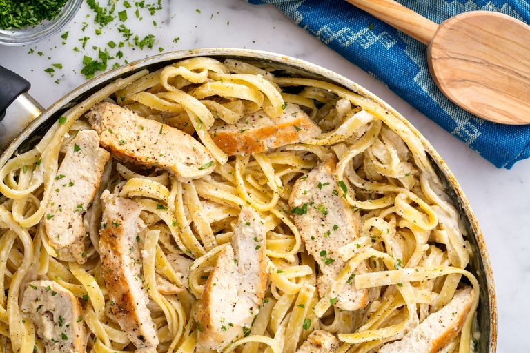

Alfredo

Description
This Alfredo recipe combines Fettucini noodles with a homemade sauce, fresh herbs and boneless skinless chicken breasts.
Feel free to go sans chicken.
Ingredients
- 2 tbsp. Extra-Virgin Olive Oil
- 2 Boneless Skinless Chicken Breasts
- Kosher Salt
- Freshly Ground Black Pepper
- 1 1/2 c. Whole Milk
- 1 1/2 c. Low-Sodium Chicken Broth
- 2 Cloves Garlic, Minced
- 8 oz. Fettucini
- 1/2 c. Heavy Cream
- 1 c. Freshly Grated Parmesan
- Freshly Chopped Parsley, For Garnish
Directions
- In a large skillet over medium-high heat, heat oil. Add chicken and season with salt and pepper. Cook until golden
and cooked through, 8 minutes per side. Let rest 10 minutes, then slice.
- Add milk, broth, and garlic to skillet. Season with salt and pepper and bring to a simmer. Add fettuccine, stirring
frequently for about 3 minutes. Let cook until al dente, 8 minutes more.
- Stir in heavy cream and Parmesan until combined. Simmer until sauce thickens.
- Remove from heat and stir in sliced chicken. Garnish with parsley.
- ENJOY!